超過 3 成的不合格申請文件
由於社會局公托網站缺乏良好的資訊架構和流暢的使用流程，家長們難以快速找到所需的資訊與規定，有過 3 成的文件出現填寫錯誤或申請人不合資格。
Executive Summary
超過 3 成申請文件填寫錯誤或資格不符，網站資訊架構與流程不佳，家長難以找到需要的規定。
把每位家長都視為首次使用者；優化手機版介面；政府沒有預留預算，因此將解方拆成三種成本層級。
專案結束兩年後，承辦人索取我們設計的懶人包，並以此為基礎公布新版。

公共托育主要服務對象為年齡滿 2 個月至 2 足歲以下之嬰幼兒和設籍台北市的家長。符合資格的家長可上社會局公托網站，在閱讀相關規則後填寫登記表單，即可參與名額候補與開園抽籤。每年有大量的著急的家長們希望排隊申請公托服務以減緩帶小孩的壓力。
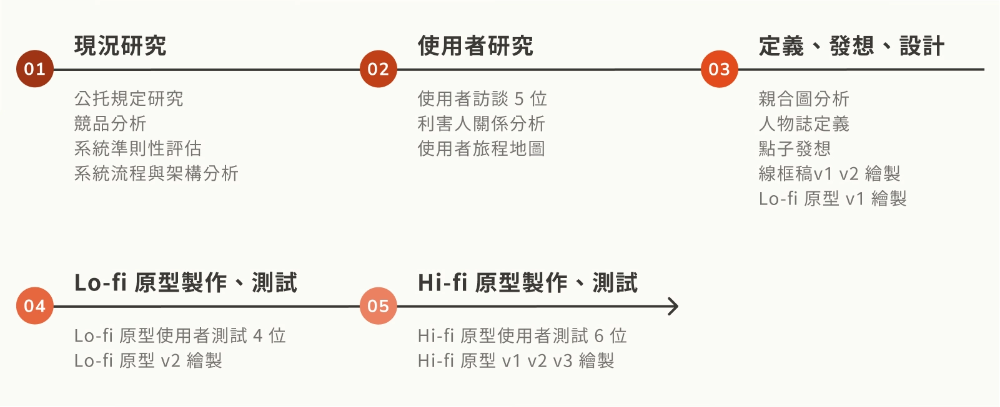
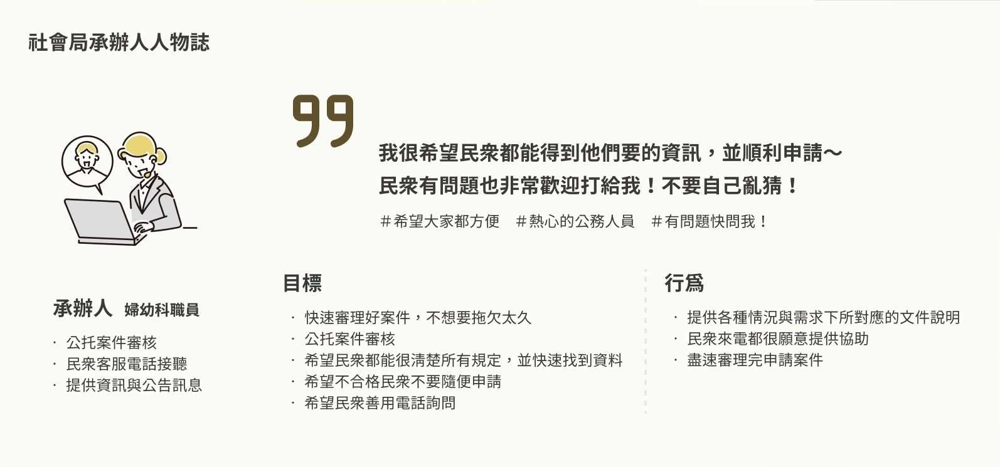
使用者皆為新手
公托服務使用頻率極低（一年抽 1 - 2 次），必須將每位使用者當作首次操作來看待。
公托資料繁多
相關規則具有不同的發布年份，抽籤資格與順位規範多，需注意使用者對資料的理解力。
使用者種類與情境多樣
作為公共服務面向所有大眾，將會有動機與需需求不盡相同的使用者，需多方考量不同的使用情況。
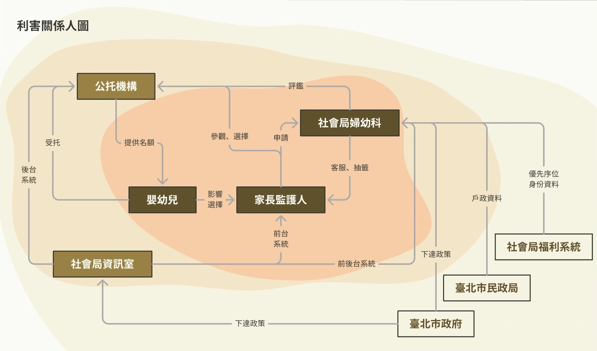

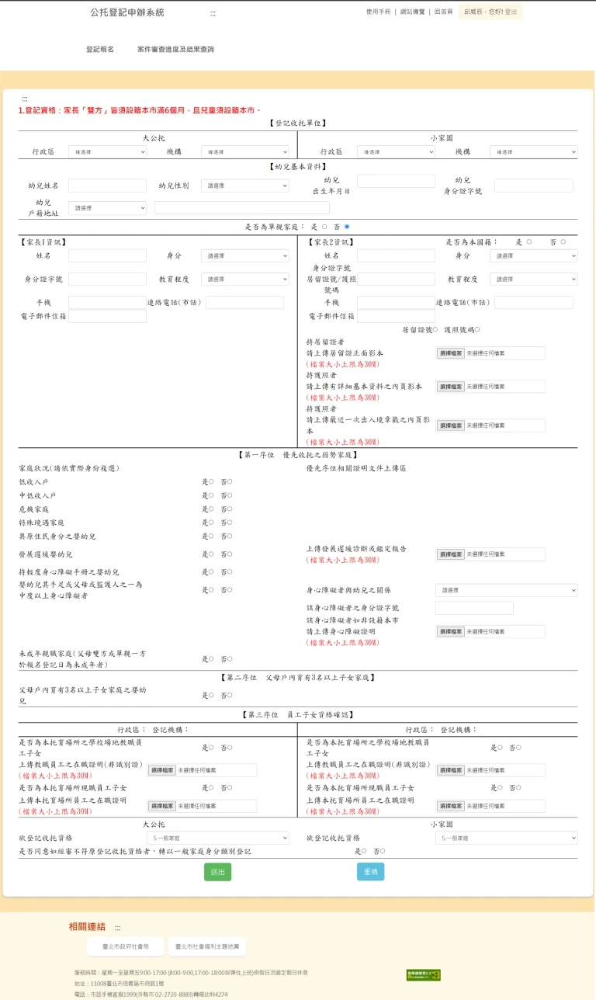
錯誤預防不足、缺乏一致性及缺少幫助
我們根據問題嚴重程度分為 1 到 4 分評分。而在 64 個易用性問題中，錯誤預防不足、缺乏一致性及缺少幫助和說明是最嚴重的問題。
文件散亂、填寫表單未分流
經團隊認知走查「理解規則」、「查找托育機構資訊」及「登記」三大任務後發現，雖然流程簡單且線性，但未整理的文件、混亂的文字配色與資訊混雜的表單，降低使用者閱讀與查找資料的效率。

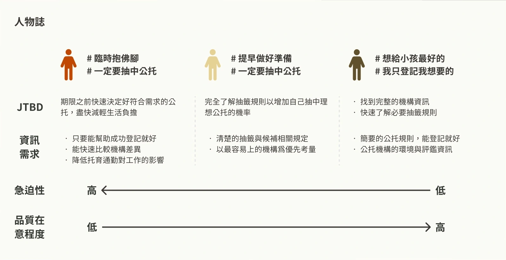
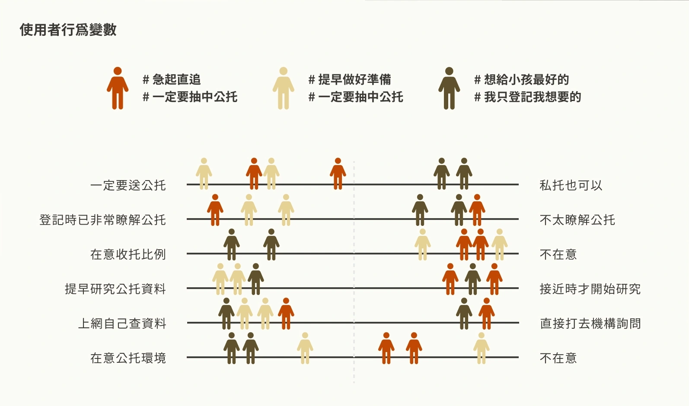
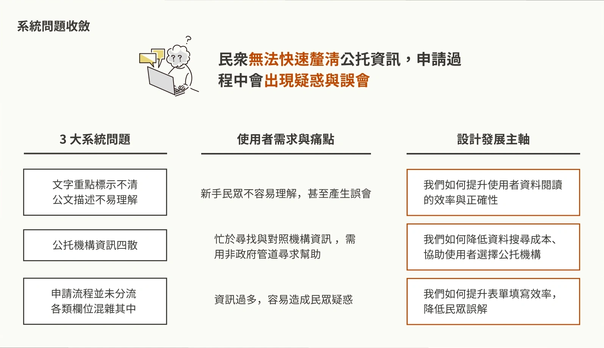
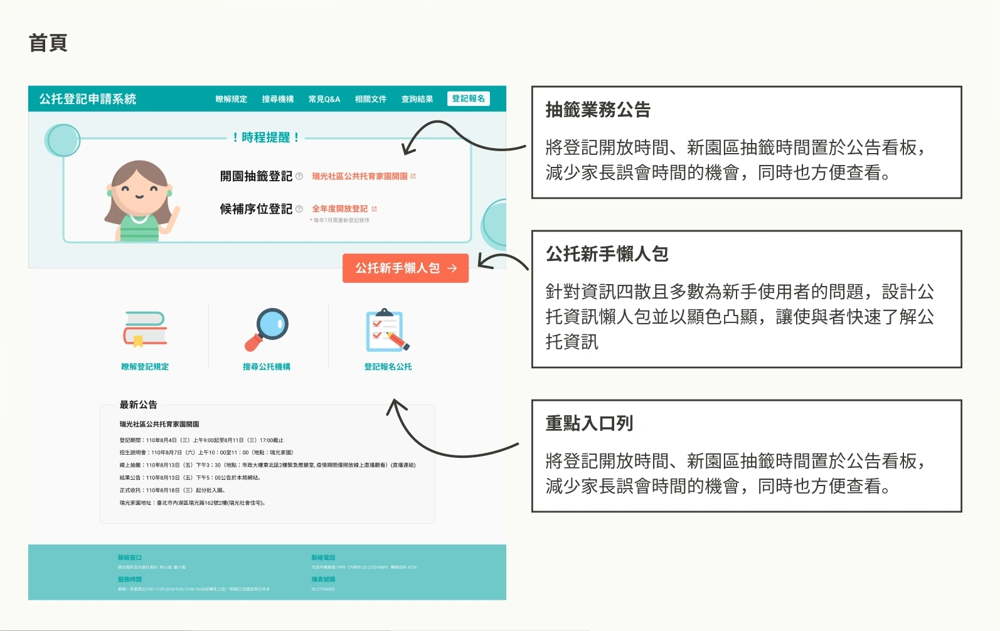
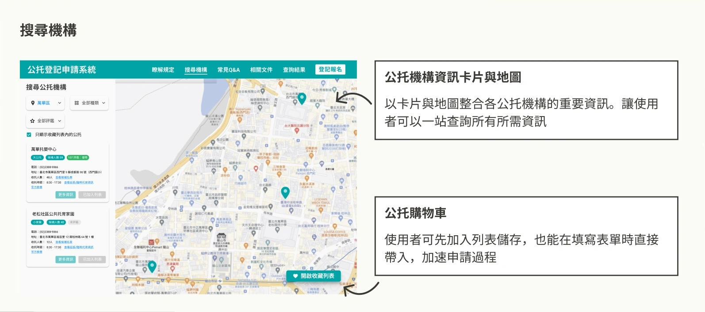
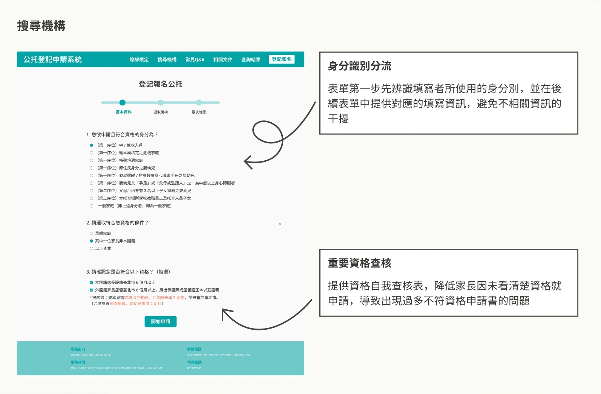
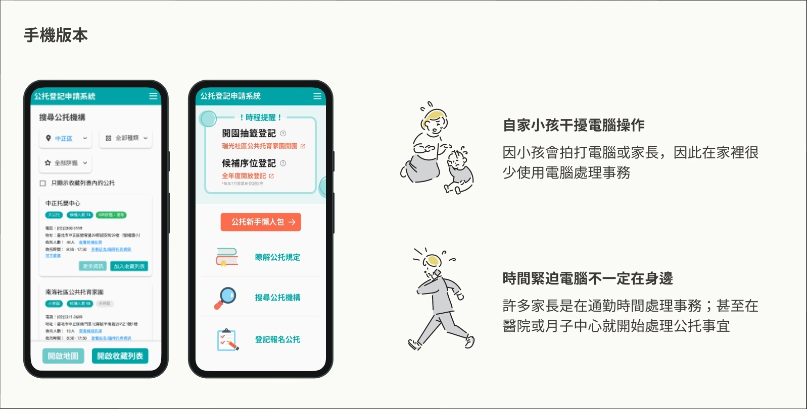
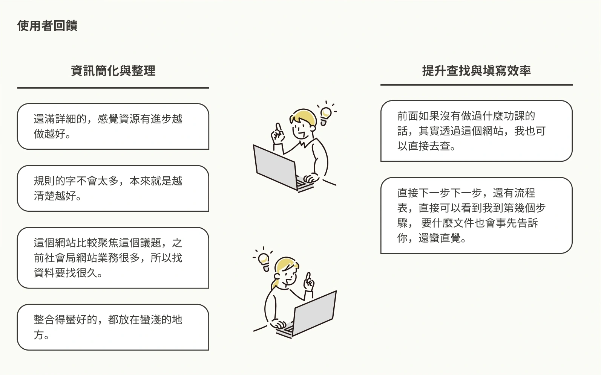
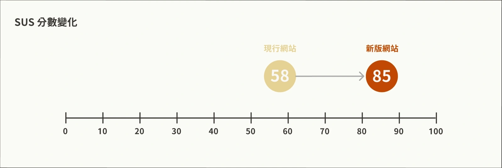
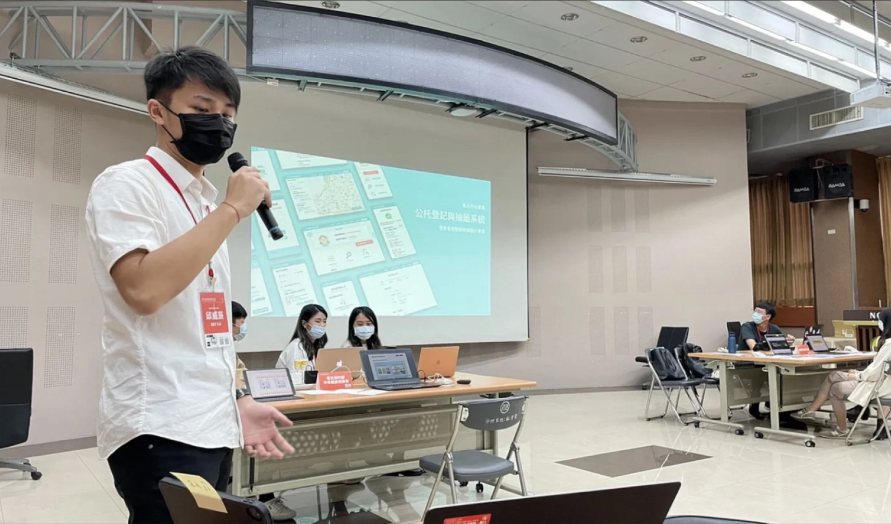
因在政府推行網站改革本就有一定難度，我們將所有解方拆分為以下三種解決方式，同時也引導社會局婦幼科承辦人、婦幼科科長、唐鳳政務委員進行原型的操作，各政府機要也十分滿意我們的設計：

設計系統架構規劃與整理